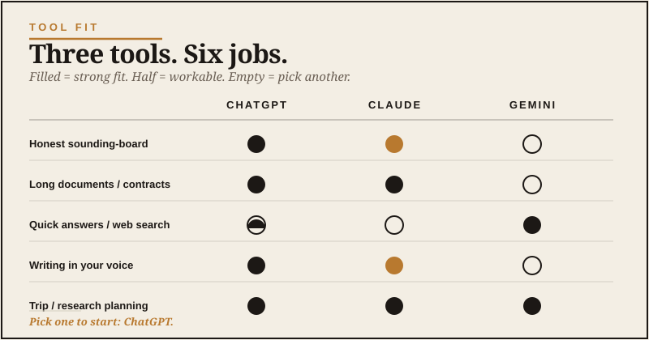

Let me start by making a confession. There are about forty AI tools getting promoted to grown men right now, and most of them are noise. Specialized image generators. Productivity wrappers. Browser extensions that promise to “supercharge” something. This is the same disease as the gear world: everybody wants to sell you the magic thing that fixes everything. Forget all of them, at least to start.
For ninety percent of what you’ll actually want to do with AI, three tools matter: ChatGPT, Claude, and Gemini. They’re built by the three companies most aggressively pushing the field forward. Each one has a different personality and a different sweet spot.
Here’s how I’d explain them to a friend over coffee.
ChatGPT: the all-around shop tool
If AI tools were tools in a workshop, ChatGPT would be the cordless drill. It’s not the best at any one thing. It’s the thing you reach for first because it handles ninety percent of jobs well enough. Not exciting. Useful. I’ll take useful every time.
Built by OpenAI, ChatGPT is the one most people have heard of. It launched in late 2022 and it’s the tool that pulled AI out of research labs and into normal people’s lives.
What it’s great at: general questions, planning, brainstorming, summarizing, image generation (it can make images now), basic writing tasks, working through decisions, and just having a conversation about something you’re trying to figure out. The interface is clean. The voice is approachable. The free version is genuinely useful, and the paid version ($20 a month) gives you better models and more features.
Where it’s weaker: long documents (there are limits on how much text it can handle at once), really nuanced writing tasks where you need a careful editorial voice, and anything where you need it tightly integrated with Google’s services.
If you’re going to start with one tool and use it for a month, this is the one.
Claude: the careful writing partner
Claude is built by Anthropic. It’s the tool you don’t hear as much about — partly because the company doesn’t market as aggressively as OpenAI, and partly because Claude’s sweet spots are quieter than “make me a viral image.”
Here’s where Claude shines. Long documents. Nuanced writing. Careful analysis. Anything where you want a thoughtful collaborator rather than a quick answer.
If you give ChatGPT a 30-page report and ask for a summary, it’ll do a fine job. Give the same report to Claude, and you’ll often get a better, more nuanced summary that catches things ChatGPT skimmed over. If you’re drafting a letter, an essay, a blog post, or a long email — Claude tends to produce writing that sounds more like an actual human and less like AI default voice.
It’s also good at conversations where you want it to push back. ChatGPT tends to be agreeable. Claude is more willing to say “here’s where your plan has a problem.”
Cost is the same — about $20 a month for the paid version. The free version is good but limited.
If your work involves writing, thinking, or long-form analysis, Claude earns its keep fast.
Gemini: the Google-shaped one
Gemini is Google’s AI. It’s built by the same company that owns Search, Gmail, Google Docs, Google Drive, YouTube, and a lot of the rest of the internet you use every day.
That ecosystem is the whole point. Gemini’s biggest advantage is that it’s wired into Google. If you want to summarize an email thread in Gmail, generate a draft directly in Google Docs, or pull information from your Google Drive — Gemini does that natively in a way the others can’t.
It’s also pretty good at web-aware research. It can pull current information off the live internet, cite sources, and stitch together answers that account for what’s actually happening this week. ChatGPT and Claude can do this too, but Gemini’s integration with Google Search gives it a real edge here.
Where it’s weaker: the writing voice tends to feel more corporate than Claude. The conversational quality is generally a step behind ChatGPT. And if you don’t live in the Google ecosystem already, the integration advantages don’t apply.
If you’re a heavy Gmail and Google Docs user, Gemini is genuinely worth it. If you’re an Apple-and-Outlook guy, it’s fine but not necessary. Don’t switch ecosystems just because a tech company made a shiny demo. That way lies madness, and probably three new passwords.

The honest comparison nobody publishes
The tech press will tell you the differences between these tools are huge. They’re not. The truth is they’re more alike than different. All three can hold a conversation. All three can write a passable email. All three can summarize a document. All three can help you think through a problem.
Where they diverge is in feel and edge cases. ChatGPT feels the most polished. Claude feels the most thoughtful. Gemini feels the most utility-grade. Pick the one whose personality matches what you’ll use it for, and don’t agonize about the choice.
The verdict, simplified
Start with ChatGPT. If you’re new to AI and want one tool that handles most things, this is the answer. The free version is enough to get oriented. Upgrade to the paid version after a couple weeks if you find yourself using it daily.
Add Claude when you start doing serious writing or working with long documents. The two-tool combination — ChatGPT for general use, Claude for writing — covers an enormous range of work for grown men.
Use Gemini if you’re a Google household. If your email and documents already live there, the integration is worth the price.
The thing nobody tells you is that you’ll probably end up using more than one anyway. The trick is not to start with all three at once. Pick one. Use it daily for a month. Then add the next.
The mistake most beginners make
Tool-hopping. Watching one more YouTube video about which tool is best instead of just picking one and using it.
The actual skill — knowing how to ask better questions, knowing what these tools can and can’t do, knowing when to verify and when to trust — comes from using the tool, not from researching it. A guy who picks ChatGPT today and uses it for an hour a day for a month will be more capable than the guy who watches forty videos comparing the latest releases.
Pick one. Today. Start.